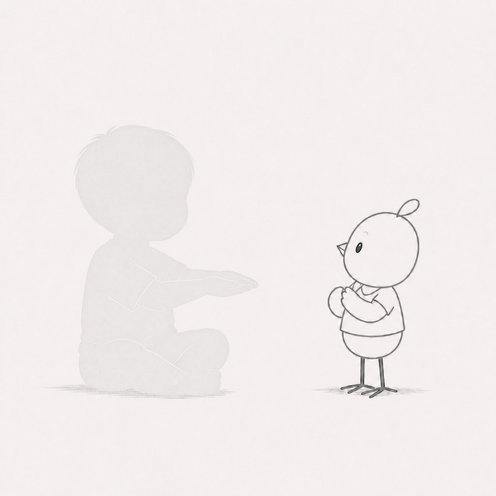

A lens for right now
A lens for right nowTrying ways
to communicate
Requesting, refusing, choosing and greeting—in ways that feel natural to the child.
You can change this lens at any timeNot to score development—just to notice everyday moments from a new angle.

Choose one or more interests. These are not developmental levels.
A lens for right nowRequesting, refusing, choosing and greeting—in ways that feel natural to the child.
You can change this lens at any timeA nearby lensCreating openings for connection through voice, gaze and pointing.
Not a sequence, score or pass/fail level


No photo required. Save the moment now, and add a photo or voice later if you wish.